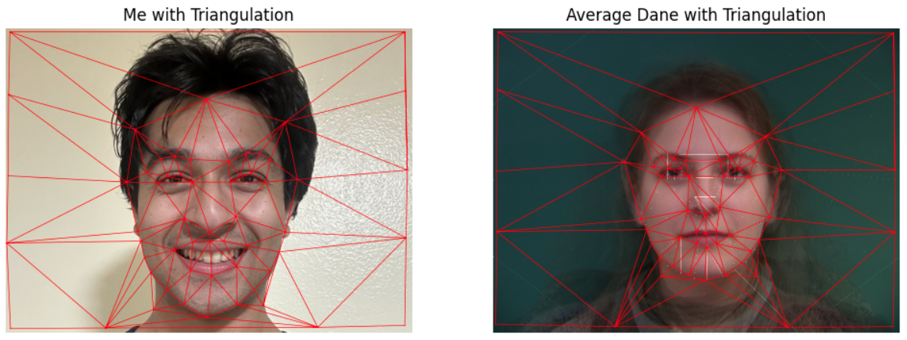

This section displays facial keypoints selected from two images: one of myself from freshman year, and one of myself today. I used the given correspondence tool to manually label keypoints. Using Delaunay triangulation, a mesh is created for the face, which is used for the morphing process. You can see the original images, keypoints, and triangulation below:
Current Avi
Freshman Avi
Facial Triangulation
Part 2: Affine Warp and Midway Face
An affine warp was used to create a midway face between the two images by leveraging the triangulation. Below, you can see the original faces and the midway face:
Freshman Me
Midway Face
Current Me
Part 3: Morph Sequence GIF
A sequence of morphed images was generated between the two faces, essentially showing the transformation from one image to the other. Below is a GIF showing the full morph sequence:
Part 4: Mean Face from Danes Dataset
The mean face was computed from the Danes dataset by averaging keypoints and warping images to the mean shape. Below are some other Dane faces morphed into the mean shape, and examples of my face morphed into the mean face's geometry:
Dane Mean Shape
Danes Morphed to Mean Shape
My Face Morphed to Dane Mean Face
Part 5: Caricature
Various caricatures were generated by exaggerating the difference between my face and the average face. Caricatures of my face are created by amplifying the difference between my face shape and the average face shape, scaled by alpha. However, due to differences in image cropping, even a small exaggeration (low alpha) results in an extreme caricature, which shrinks my face and enlarges the corner triangles. Below are the caricatures at different alpha values:
Caricature Alpha = -0.5
Caricature Alpha = 0
Caricature Alpha = 0.5
Caricature Alpha = 1
Caricature Alpha = 1.5
Caricature Alpha = 2
Caricature Alpha = 3
Bells and Whistles: Gender Morphing
Using the average female face calculated from the women in the Danes dataset, I morphed my face into a woman by changing its shape, appearance, and both. Below are the results:

Triangulations of My Face and Female Dane
Shape Morph
Appearance Morph
Shape + Appearance Morph
Conclusion
This project explored facial keypoint selection, triangulation, affine warping, morphing, computing mean faces, and generating caricatures. These methods allow for powerful image transformations!